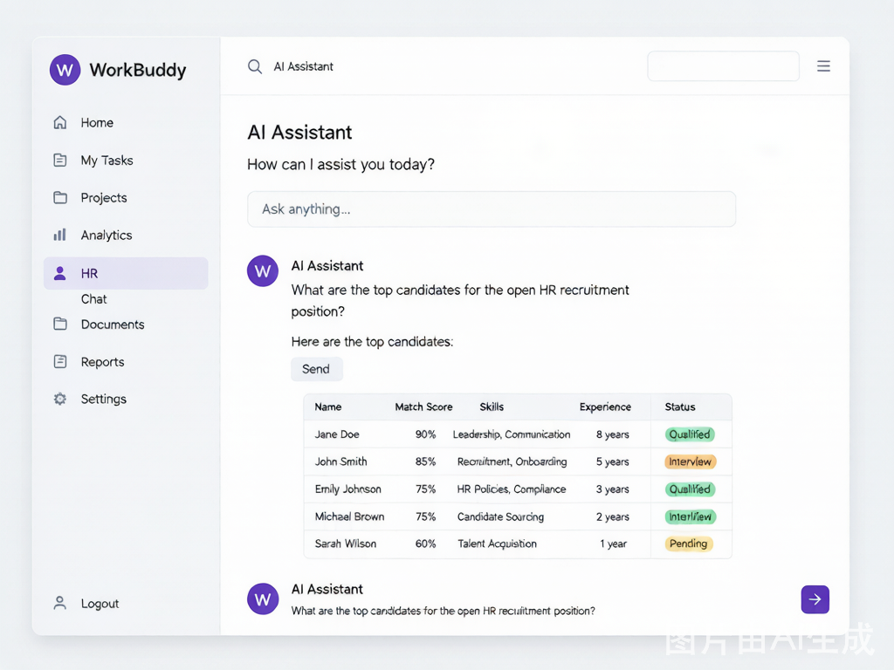
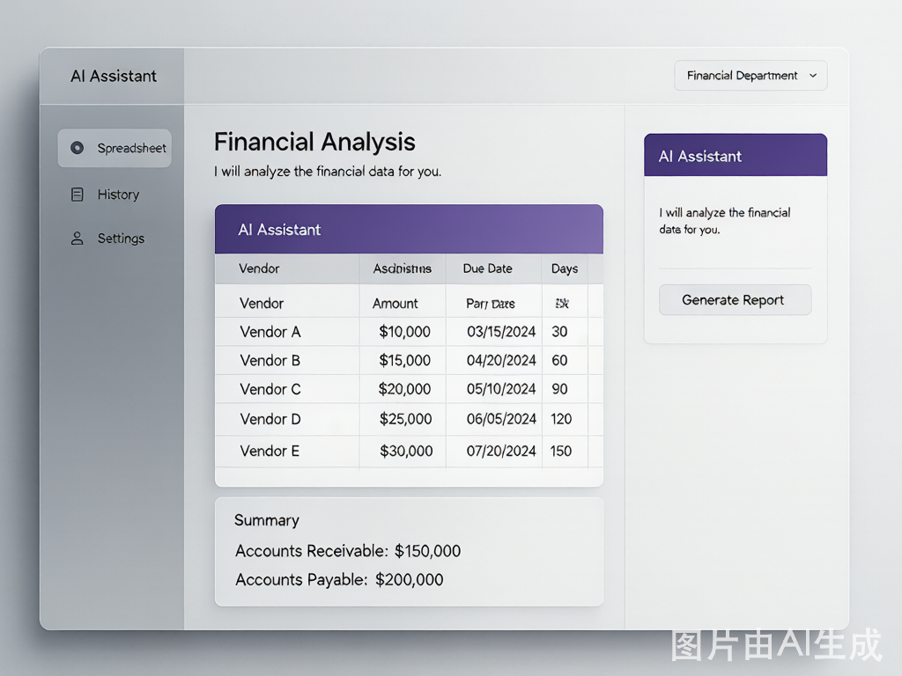
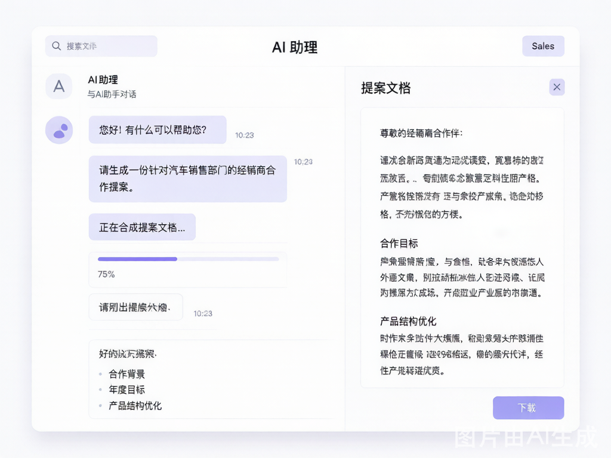
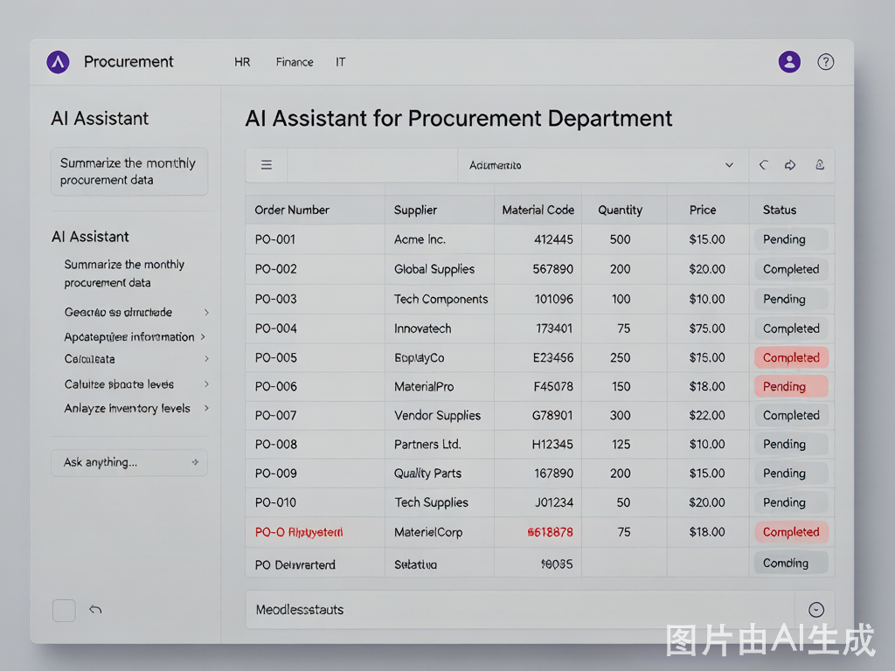
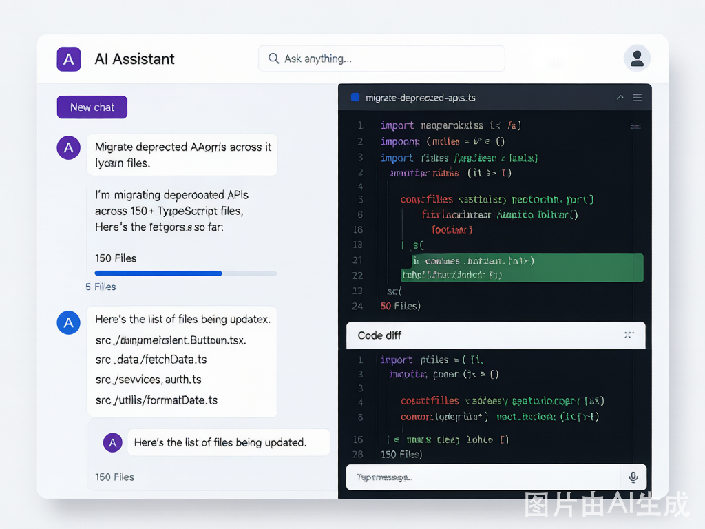
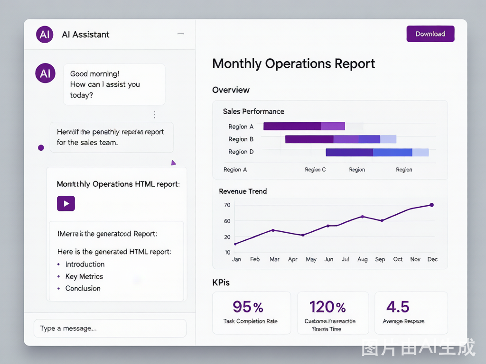

WorkBuddy 精选使用教程白皮书
从新手入门到进阶应用 —— 一本通览 AI 智能工作伙伴的全部精华
重新认识 WorkBuddy
WorkBuddy 不是传统意义上的 AI 聊天工具。它是一个能够在本地环境中直接执行操作的智能工作伙伴 — 读写文件、运行终端命令、操控浏览器、调度定时任务，以及通过 MCP 协议连接 50+ 外部工具与服务。
图 2 — WorkBuddy 与传统 AI 工具能力对比
新手入门篇
核心能力全景
WorkBuddy 采用 Electron + 本地 Agent 架构，可在 Windows 和 macOS 上运行。其能力覆盖从简单的对话问答到复杂的自动化编排。
智能对话
支持多种 AI 模型（大模型 + 轻量模型），适配不同任务复杂度。支持文生图、文生视频等多模态输出。
文件操作
直接读写本地文件系统，支持 Word、Excel、PDF、Markdown、代码文件等数十种格式的读取与生成。
命令执行
在隔离沙箱中执行 Shell/Bash/PowerShell 命令，支持 npm、pip、git 等开发工具链的自动调用。
浏览器自动化
基于 Playwright 操控浏览器，实现网页截图、表单填写、数据抓取、端到端测试等场景。
定时自动化
设置定时循环或一次性任务，自动执行数据采集、报告生成、网站监控等重复性工作。
工具集成
通过 MCP 协议连接 50+ 外部服务（TAPD、飞书、企业微信、腾讯文档、WeStock 等），打破数据孤岛。
三种工作模式详解
WorkBuddy 提供三种灵活的工作模式，适配不同任务阶段的需求。
首次配置与环境搭建
环境依赖检查
| 组件 | 最低版本 | 检查命令 | 安装方式 (macOS) |
|---|---|---|---|
| Node.js | v18+ | node -v | brew install node@20 |
| Git | 2.x+ | git --version | brew install git |
| .NET Runtime | 6.0+ | dotnet --list-runtimes | brew install --cask dotnet-sdk |
spawn node ENOENT，请优先检查这三个依赖。
基础操作四步走
选择工作模式
顶部切换 Ask / Plan / Craft — 不同阶段切换不同模式，事半功倍。
下达结构化指令
使用 "角色 + 任务 + 约束 + 输出格式" 公式编写 Prompt，让 AI 精准理解意图。
查看与审查结果
右侧结果区提供"概览、产物、浏览器、变更"四类视图 — 建议先在"变更"视图确认修改。
保存与分享产物
支持本地保存、上传云端网盘/腾讯文档/ima/乐享知识库、生成分享链接。
常见问题速查
| 问题 | 可能原因 | 解决方案 |
|---|---|---|
| 启动白屏/报错 | 缺少 Node.js / Git / .NET | 查看 logs/main.log，安装缺失组件 |
| 长时间无响应 | 网络不佳 / 积分不足 / 任务过重 | 检查网络与积分，超过 3 分钟取消重试 |
| 文件路径报错 | 使用了相对路径 | 改用绝对路径，或直接拖拽文件到对话框 |
| 无法读取图片/PDF | 模型不支持 / 缺少 Skill | 切换多模态模型，安装文档处理 Skill |
| 自定义指令不生效 | 未在新会话中测试 | 必须新建会话才能生效 |
| 生成文件打不开 | 未指定输出格式 | 明确指定格式（如 .xlsx、.pdf） |
进阶应用篇
三层记忆体系
WorkBuddy 的记忆系统让它在多次对话中保持连续性 — 记住偏好、项目约定和工作习惯。这是真正区别于一次性聊天工具的核心能力。
Skills 技能系统
Skills 不是简单的"快捷指令"，而是带有完整上下文、脚本和工具的独立能力模块。安装一个 Skill，等于为 WorkBuddy 配备一项专业能力。
| Skill | 能力 | 典型场景 |
|---|---|---|
| 多模态生成 | 文生视频、文生 3D、图生 3D、图片特效 | 快速生成宣传视频、3D 模型原型 |
| WeStock Data | A股/港股/美股行情、财报、研报查询 | 金融数据采集、投资分析 |
| WeStock Tool | 条件选股、策略筛选、排行榜 | "MACD 金叉的科技股有哪些？" |
| NeoData Financial | 自然语言金融搜索 | "帮我查宁德时代的最新财报" |
| CloudStudio Deploy | 一键部署静态网站到云端 | 前端项目快速上线预览 |
| Expert Manager | 专家包的创建、修改和审查 | 构建领域专属 AI 专家 |
用户级技能
路径：~/.workbuddy/skills/
适用范围：所有项目
适合存放通用能力（如文档处理、金融数据）
项目级技能
路径：{项目}/.workbuddy/skills/
适用范围：当前项目
适合存放项目专用的自动化流程
MCP 工具生态
MCP（Model Context Protocol）是 WorkBuddy 接入外部世界的标准协议。通过配置 MCP 服务器，WorkBuddy 可直接操作 50+ 外部工具。
图 5 — MCP 工具生态全景（按类别分布）
配置示例（腾讯文档）
// ~/.workbuddy/mcp.json
{
"mcpServers": {
"tencent-docs": {
"command": "npx",
"args": ["@anthropic/mcp-server-tencent-docs@latest"]
}
}
}Agent Loop 执行引擎
WorkBuddy 的核心执行机制是 Agent Loop — 一个"思考 → 行动 → 反馈 → 再思考"的闭环系统，使 AI 能够自主纠错和多步推理。
这个循环使 WorkBuddy 能够：
- 自主纠错：遇到错误时自动分析原因并尝试修复
- 多步推理：复杂任务自动拆解为多个步骤依次执行
- 上下文感知：根据上一步结果动态调整下一步策略
自动化定时任务
WorkBuddy 的自动化不只是定时提醒 — 而是定时执行完整的 AI 任务链。每条自动化任务都是一个独立的 Agent 调度。
典型自动化场景
| 场景 | 频率 | 任务描述 |
|---|---|---|
| 每日数据报表 | 每天 9:00 | 采集数据 → 生成分析报告 → 保存到指定目录 |
| 网站监控 | 每 6 小时 | 检查目标网站状态 → 异常时生成告警 |
| 每周总结 | 周五 17:00 | 汇总本周工作记录 → 生成工作总结 |
| 定期备份 | 每天 23:00 | 备份项目文件和记忆数据到备份目录 |
1. 所有路径必须使用绝对路径（相对路径在不同环境行为不一致）
2. 先用一次性任务测试，确认无误后再转为循环模式
3. 执行模式建议选"后台静默"，通知方式选"仅失败时通知"
指令编写黄金法则
高质量指令是高效使用 WorkBuddy 的关键。以下是经过验证的指令模板和策略。
模型选择策略
| 任务类型 | 推荐模型 | 原因 |
|---|---|---|
| 简单查资料、改文案 | 轻量模型 | 速度快，节省积分 |
| 代码生成、架构设计 | 大模型 | 质量要求高，值得消耗 |
| 复杂推理、数据分析 | 推理增强模型 | 深度思考场景 |
| 高频率任务 | 自定义模型 | 接入自有 API Key，零积分 |
最佳实践篇
实战案例集锦
十大高效技巧总览
| # | 技巧 | 说明 |
|---|---|---|
| 1 | 赋予 AI 身份 | 通过 SOUL.md / IDENTITY.md / USER.md 定制专属助手人格 |
| 2 | 善用三种模式 | 不确定时 Plan，明确时 Craft，探讨时 Ask |
| 3 | 建立项目上下文 | 在 .workbuddy/context.md 中一次性声明项目约定 |
| 4 | 一个对话一个任务 | 避免上下文混乱，完成即关闭 |
| 5 | 直接传文件 | 拖拽文件到对话框，不要手动复制粘贴内容 |
| 6 | 报错丢回去 | AI 能根据错误信息自动分析并修复 |
| 7 | 5W1H 指令公式 | 角色 + 任务 + 约束 + 输出格式 — 一次说清 |
| 8 | 分批处理大任务 | 复杂任务拆小，逐批执行验证，单批不超过 10 个文件 |
| 9 | 利用自动化 | 重复性任务设为定时自动化，解放双手 |
| 10 | 定期备份 | 记忆文件 + 自定义配置做好三重备份 |
避坑指南
安全操作红线
| 操作 | 风险 | 安全措施 |
|---|---|---|
| 整理桌面 | 高 | 执行前先备份重要文件 |
| 批量删除文件 | 高 | 先让 AI "列出将要处理的文件"再确认 |
| 递归清理目录 | 高 | 分批处理，每次不超过 10 个文件 |
| 操作工作空间外文件 | 中 | 确认必要性后临时开启完全权限 |
| 生成可执行脚本 | 中 | 先在变更视图审查再执行 |
性能优化与维护
本地环境推荐配置
| 项目 | 最低要求 | 推荐配置 |
|---|---|---|
| 内存 | 8 GB | 16 GB+ |
| Node.js | v18 | v20 LTS |
| 磁盘空间 | 2 GB | 5 GB+ |
| 并行 Agent 数 | 1 | 16GB 内存下建议最多 2 个 |
三重备份策略
故障排除速查
| 问题 | 快速诊断 | 解决方案 |
|---|---|---|
| 启动失败 | 查看 logs/main.log | 安装缺失的依赖组件 |
| 执行缓慢 | 检查网络 / 模型选择 | 切换轻量模型或自定义模型 |
| 自动化未执行 | 检查路径 / 调度设置 | 确认使用绝对路径，先用一次性测试 |
| 自定义指令不生效 | 检查是否新会话 | 新建会话后再测试 |
| MCP 连接断开 | 检查连接器管理页面 | 点击"信任"按钮重新授权 |
| Excel 格式异常 | 检查指令是否指定格式 | 明确说明列宽、表头、数字格式 |
| 财务数据精度丢失 | 检查小数精度设置 | 指令中明确要求"保留 2 位小数" |
部门实战案例集
覆盖 6 大核心部门 · 10 个高 ROI 场景 · 真实效率数据。以下案例均来自企业真实用户的实战分享，数据经过脱敏处理但保留了原始效率提升比例。
人事部
员工服务招聘管理案例一：AI 智能简历筛选
某中型企业 HR 每天需从 200+ 简历中筛选合格候选人，传统方式单份简历平均耗时 3-5 分钟，终日机械劳动、筛选疲劳导致漏筛率高达 15%。
准备简历文件夹
将收到的 PDF/Word 简历统一放入项目目录。WorkBuddy 会自动识别中文 PDF，无需逐份转换。
设定筛选标准
在 Craft 模式下输入指令：读取所有简历，按以下标准筛选：本科及以上、3 年以上 Java 经验、有微服务项目经验。输出候选人的姓名、学历、工作年限、匹配亮点到一个 Excel 表格。
审核与调优
WorkBuddy 自动读取所有简历 PDF，提取关键信息，按规则打分排序。HR 只需审核 Top 20 候选人，将匹配不合理的要求反馈给 AI 优化筛选规则。
一键生成面试通知
追加指令：为 Top 10 候选人生成个性化面试邀请邮件，包含岗位名称、面试时间槽位、公司地址，输出为 Word 文档。

案例二：入离职材料 OCR 全自动处理
某公司 HR 每月处理 80+ 份入离职纸质材料（学历证明、身份证、合同附件），传统流程需要逐份拍照 → 录入 → 归档，单份耗时 8-10 分钟。
搭建 OCR 流水线
将员工的纸质材料照片或扫描件放入指定文件夹。使用 WorkBuddy 安装必要的 Python 依赖（pytesseract, opencv-python, python-docx），一次性配置即永久复用。
批量启动处理
指令：读取入职材料目录下所有图片，用 OCR 提取文字，按姓名、身份证号、学历、毕业院校、专业生成结构化 Word 文档。遇到模糊图片自动标记待人工确认。
审核异常项
WorkBuddy 自动处理正常清晰度的材料，对模糊、倾斜、反光的图片标记为"待确认"。HR 只需集中处理约 5% 的异常材料。
归档 + 推送
生成的 Word 文档自动按"姓名_入职日期.docx"命名规则保存，并可通过 MCP 推送到企业网盘或飞书文档。
财务部
报表分析风险管控案例一：应收应付账期自动化分析
某货柜行业财务 BP 需要每月跟踪 50+ 供应商和 80+ 客户的账期数据，手工整理 3 天，且不同渠道（国内/海外）、不同客户类型的账期规则各不相同，极易出错。
准备数据源
将 ERP 导出的应收/应付明细 Excel 放入工作空间。文件包含供应商/客户名称、金额、开票日期、约定账期、实际回款日期等字段。
设定分析维度
指令：读取应收明细.xlsx 和应付明细.xlsx，按客户/供应商维度计算账龄分布（30天/60天/90天/90天以上），超出约定账期的用红色标记，生成账期分析报告，包含 TOP 10 逾期客户和 TOP 10 即将到期供应商。
自动生成合同条款建议
追加指令：基于上述分析，为新签合同生成标准账期条款模板，区分国内大客户（60天）、电商（30天）、海外欧美（90天）三种类型。
月度异常监控
将流程配置为自动化任务，每月 1 号自动执行，生成的报告通过企业微信推送给部门负责人。

案例二：多维度财务经营分析报告
财务 BP 每月需出具涵盖 SKU 盈利分析、库存周转天数、产能匹配测算的综合经营分析报告，通常耗时 2-3 天。
多源数据接入
将销售明细表、库存表、外协产能表分别放入工作空间。WorkBuddy 自动识别不同表结构并做数据对齐。
一站式分析指令
基于销售明细.xlsx、库存表.xlsx、产能表.xlsx，生成 6 月经营分析报告。包含：(1) 全品类 SKU 销量 Top 20 及毛利分析，(2) 原材料/在制品/成品库存周转天数，(3) 呆滞库存（超过 90 天未动销）清单，(4) 外协产能与月度销量的匹配率。以 Markdown 格式输出，图表使用 ECharts。
审查与微调
WorkBuddy 自动完成数据清洗、计算、图表生成和文字叙述。财务 BP 只需审查关键数据和结论，微调措辞后即可定稿。
推送到管理层
通过 MCP 连接腾讯文档，一键将报告推送到管理层的协作空间中。
销售部
客户方案数据驱动案例一：经销商方案 2 分钟极速生成
某食品行业销售经理每月需要为 20+ 经销商定制产品结构调整方案，传统方式每份方案需 3-4 小时，月底常常通宵赶工。
建立通用模板
首次使用时，让 WorkBuddy 生成标准方案框架：生成一份经销商产品结构调整方案通用模板，包含：合作背景与现状分析、年度目标与月度拆解、产品结构优化方向（高毛利/高周转/引流品）、执行节奏与关键节点、效果评估指标。语言正式、结构清晰。
口述客户需求 → 定制方案
后续使用时只需口述该客户的具体情况：基于刚才的模板，为 XX 经销商定制方案。他们主营休闲零食，现有 SKU 320 个，月均销售额 85 万，高毛利产品占比仅 15%。目标是将高毛利占比提升到 30%，增加 5 个引流爆款。
2 轮微调定稿
WorkBuddy 生成的初稿已经包含数据分析和执行建议。销售经理只需根据客户关系微调措辞和具体目标数字，平均 2-3 轮迭代即可定稿。
合同条款智能生成
确认方案后追加指令：基于上述方案，生成一份经销商年度合作协议草案，包含年度销售目标、返利政策、违约责任条款。

案例二：早晚报数据自动提炼
销售岗每天需要对着一堆销售数字提炼重点、组织语言写早晚报，每次 30 分钟以上。
配置日报模板
指令：我每天需要生成销售早报和晚报。早报包含：昨日销售总额、环比变化、TOP 3 爆款产品、今日重点跟进客户。晚报包含：今日完成情况、未达标原因、明日计划。请记住这个模板。
拖入数据自动生成
每天只需将销售系统导出的 Excel 拖入对话框，WorkBuddy 自动提取关键数字并套用模板生成报告。
配置自动化定时发送
将流程配置为每天 8:00（早报）和 18:00（晚报）自动执行，通过企业微信推送给团队。
采购部
成本管控供应商管理案例一：多表联动自动匹配 + 价格异常检测
某制造企业采购岗每月需要将 60+ 份采购订单与先期询价台账交叉比对，检查实际采购价与询价阶段的差异，传统方式用 Excel VLOOKUP 手工匹配，耗时 1 天以上，且容易遗漏。
批量读取订单
指令：读取订单文件夹下所有采购订单 Excel 文件，汇总成一张总表，字段包括：订单号、供应商、物料编码、物料名称、采购数量、实际采购单价、采购日期。 — 无需逐份上传，WorkBuddy 直接批量读取。
自动匹配询价台账
指令：将上述总表与询价台账.xlsx 按物料编码和供应商名称做匹配，对比实际采购价和询价价的差异。差异超过 5% 的用红色标记，输出异常清单及建议核查事项。
深度分析 + 供应商评估
追加指令：基于匹配结果，生成供应商履约评估报告：(1) 价格偏差 TOP 10，(2) 交付准时率统计，(3) 供应商综合评分排名。
月度总结一键生成
指令：基于以上所有分析，按以下结构生成月度采购工作总结：(1) 本月采购概况与金额统计，(2) 供应商履约分析，(3) 价格异常说明与原因分析，(4) 下月采购计划建议。

开发部
代码重构架构设计案例一：153 个文件批量 API 迁移
某游戏团队在 Cocos Creator 3.8.7 升级后，需要将项目中 153 个 TypeScript 文件的 systemEvent API 迁移到 input API。传统方式逐个文件手动修改需 2-3 小时，且极易遗漏边界情况。
代码扫描与分析
指令：扫描 src/ 目录下所有 .ts 文件，找出所有使用 systemEvent 的代码位置（包括 .on、.off、.once 等调用），生成迁移清单，标注每个文件的修改点和难度。
批量自动替换
指令：将上述 153 个文件中所有 systemEvent.on(type, callback, target) 替换为 input.on(type, callback, target)，systemEvent.off 替换为 input.off。注意处理链式调用和多参数情况。
差异化处理剩余文件
118 个文件自动修复成功。剩余 35 个涉及复杂场景（如匿名函数、动态事件名），WorkBuddy 逐一生成人工修复建议，开发者逐份确认。
验证 + 提交
指令：运行 npm run build 验证编译通过，然后 git diff 查看所有变更，确认无误后创建 commit。

案例二：27 份策划文档 2 天产出
某独立游戏开发者需要在项目初期产出职业系统、装备系统、战斗系统、经济系统、新手引导等 27 份完整策划案，传统方式 1-2 天/份，预计需 4-6 周。
建立策划模板
先让 WorkBuddy 生成标准策划案模板：生成一份游戏系统策划文档模板，包含：系统概述、核心机制、数值设计、UI 交互流程、数据结构定义、测试用例清单。格式为 Markdown。
批量生成各系统策划
对每个系统逐一使用模板：基于上述模板，生成一份 MMORPG 职业系统策划案。设定 6 个职业（战士/法师/刺客/牧师/猎人/术士），每个职业 3 个主动技能 + 1 个被动技能，包含属性成长曲线和克制关系。
交叉审查与完善
所有文档生成后，让 WorkBuddy 做交叉一致性检查：审查这 27 份策划文档，检查以下问题：(1) 编号是否冲突，(2) 跨系统引用是否正确，(3) 数值设计是否自洽。输出审查报告。
运营部
数据驱动自动化报告案例一：多城市门店运营月报自动化
某连锁企业运营品质管理岗负责两个城市的门店数据，每月需产出 10 个板块的运营月报（经营日报、品质数据、配流分析、产品数据、行程激励、积分数据等），外加一个总览诊断。传统流程：周一导数据 → Excel VLOOKUP + 透视表 → 复制粘贴到 PPT → 调格式改颜色 → 周三下午发出。
定义数据口径（关键！）
运营数据最怕口径不一致。先用一次对话将口径固化：我的数据来源有 12 种微聊渠道，三网数据和私域数据混在一起。帮我建立统一的数据口径规则：(1) 微聊回复率 = 24h 内回复数 / 总咨询数，(2) 端口开通率 = 已开通 / 应开通。将规则保存为项目上下文。
搭建 Python 自动化脚本
指令：读取本月的经营数据底表，按城市维度汇总，计算微聊回复率、来电接听率、端口开通率，输出一份 HTML 报告。数据清洗时自动去重、标口径。 WorkBuddy 会自己写 Python 脚本处理。
迭代优化报告格式
第一次生成的报告可能不够美观。追加指令：报告需要包含：(1) 顶部 KPI 概览卡片，(2) 两个城市的对比图表（折线图），(3) 排名 TOP 5 / BOTTOM 5 门店明细表，(4) 异常数据自动标红提示。使用现代简约风格配色。
配置自动化执行
将整个流程配置为月度自动化任务，每月 1 日上午 9:00 自动执行，生成的 HTML 报告通过企业微信推送给管理层。

全部门 ROI 效率提升总览
各部门核心场景 ROI 对比（效率提升倍数）
| 部门 | 核心场景 | 原耗时 | 现耗时 | 效率提升 | 年化节省 |
|---|---|---|---|---|---|
| 人事部 | 简历批量筛选 | 10 小时/批 | 1.5 小时/批 | ~6.7x | ~180 人天 |
| 人事部 | 入离职材料 OCR | 8 分钟/份 | 5 分钟/份 | ~1.6x | ~60 人天 |
| 财务部 | 应收应付账期分析 | 3 天/月 | 30 分钟/月 | ~6x | ~30 人天 |
| 财务部 | 多维经营分析报告 | 2.5 天/月 | 40 分钟/月 | ~4.5x | ~25 人天 |
| 销售部 | 经销商方案生成 | 3-4 小时/份 | 12 分钟/份 | ~15x | ~80 人天 |
| 销售部 | 早晚报数据提炼 | 30 分钟/天 | 2 分钟/天 | ~15x | ~22 人天 |
| 采购部 | 多表匹配 + 异常检测 | 1 天/月 | 5 分钟/月 | ~30x | ~12 人天 |
| 开发部 | 批量代码迁移 | 2-3 小时 | 几分钟 | ~25x | 按需 |
| 开发部 | 策划文档批量生成 | 4-6 周 | 2 天 | ~12x | 按需 |
| 运营部 | 多城市门店月报 | 3 天/月 | 3 小时/月 | ~8x | ~30 人天 |
关键路径速查与资源链接
| 用途 | 路径 |
|---|---|
| 用户级记忆 | ~/.workbuddy/MEMORY.md |
| AI 身份 | ~/.workbuddy/SOUL.md / IDENTITY.md |
| 用户信息 | ~/.workbuddy/USER.md |
| MCP 配置 | ~/.workbuddy/mcp.json |
| 用户级技能 | ~/.workbuddy/skills/ |
| 项目上下文 | {项目}/.workbuddy/context.md |
| 项目记忆 | {项目}/.workbuddy/memory/MEMORY.md |
| 每日记录 | {项目}/.workbuddy/memory/YYYY-MM-DD.md |
| 日志 (macOS) | ~/Library/Application Support/WorkBuddy/logs/main.log |
资源链接
- 官方文档：codebuddy.cn/docs/workbuddy
- 官方 FAQ：workbuddy.ai FAQ
- 腾讯云开发者社区：cloud.tencent.com/developer